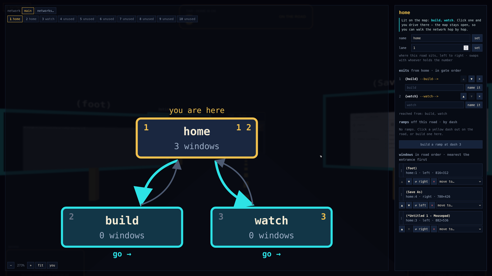
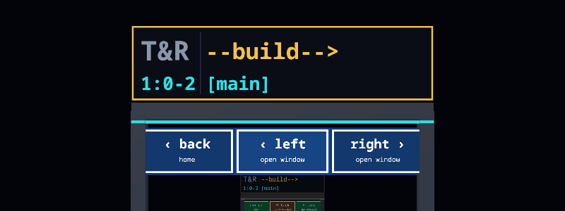
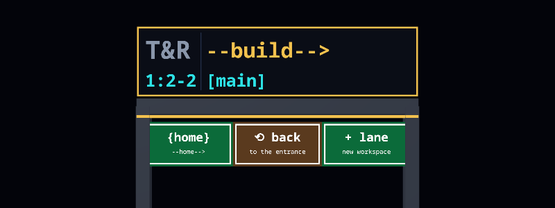
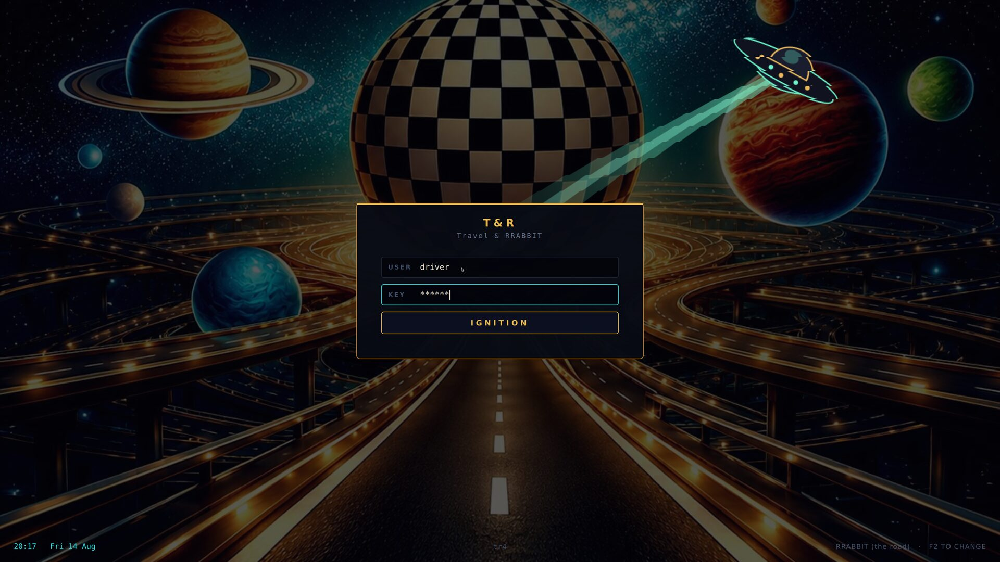
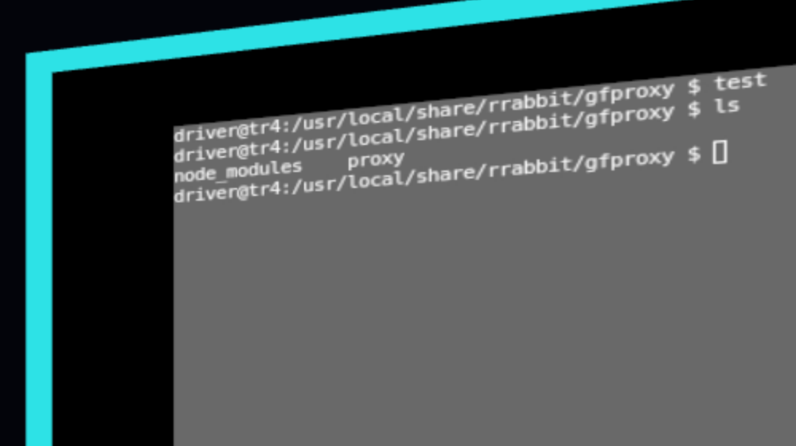
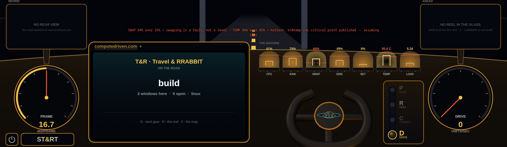

Data driven keeps the result. Compute driven ships the derivation.
The name is an argument, and it is not that data-driven work is irreproducible. It often is reproducible — when the inputs, the transformations, the environment and the method have all been preserved with enough discipline. The difference is where that discipline lives: alongside the artifact, or inside it.
Data driven
- The result is the thing that travels.
- Reproducing it means reassembling its context by hand.
- That context lives outside the artifact — a README, a lockfile, a methods section, somebody's memory.
- When any of that rots, the number outlives its derivation.
- Reproducibility is achievable, and it is a practice.
Compute driven
- The derivation is the thing that travels.
- Canonical input, executable semantics, a derived identity and its provenance ride inside the artifact.
- Meaning is computed, never assigned — the identity is a hash.
- The derivation travels with the artifact rather than as assembly instructions beside it.
- Reproducibility is a property, not a practice.
So, stated as a test rather than a mood:
And the limit, because this is the sort of page that has to state it: re-derivation proves fidelity, not correctness. A wrong computation re-runs perfectly and is still wrong. Deriving the same identity tells you that you got what we got — it does not tell you that either of us should have wanted it. What it removes is the argument about what happened, which is the argument that usually eats the room.
A road, and a window. All the way down.
This is a WRL world — the language the stack writes meaning in. Square brackets are places. Arrows are roads between them. It is a map, and the map is executable.
Now look at the shell in the picture at the top of this page: windows standing as signs along a road you drive through. That is the same drawing. Not a metaphor borrowed for the marketing — the language, the runtime, the evidence and the interface are all the same two things.
sem-…)
The shell's own documentation puts it better than we can: “One likes going; the other likes being gone to.” Neither half is worth much alone — a hash without a film is a claim, and a film without a hash is a story.
Five rungs. Three of them hold weight.
A world you can drive, that remembers where you went, and can be asked to go there again — under a certificate saying it was allowed to. That is the whole intention. It comes apart into five steps, and they are not equally real.
live_local — run end to end, on a machine here, at least once.
spec — written down, not built. There is deliberately no rung
on this page meaning we are confident it works.
Our own audit had rung three at spec — "no implementation
found" — as recently as yesterday. It shipped on 15 August, and
this table was corrected before the page went up rather than after somebody
noticed. The frontier is rung four now, and rung four is not waiting
on work: it is waiting on a decision about what the verbs are.
The window is a vehicle. It is not a browser.
The obvious way to put an operating system on the internet is to write a browser. It is also the most reliable way to spend three years and lose: Chrome is counted in billions of users, and every agent-driven browser shipped so far, added together, is a rounding error against the online population.
So the shell runs the other direction. It does not put pages inside a browser — it puts the operating system inside one. A Wayland compositor whose surfaces are ordinary native applications, encoded and carried to a canvas, standing as windows along a road you drive through.
The three programs in the photograph at the top of this page are not web
pages and were not modified to appear there: a foot terminal, a
Mousepad editor and a GTK file chooser, in a 4 GB guest at 3840×2160 with no
GPU and no /dev/dri — software EGL, software H.264, and the
frames arrive.
What the vehicle buys is the two things a page in a tab does not have: an address — the subject of the next section — and a boundary you can hang rules on. What it does not buy is universal compatibility, and there is a plain example. Firefox will not come aboard. It connects, opens its protocol channel, and then never maps a surface: no window, no error, no output on either stream. Reproduced 2026-08-14. Cause unknown.
A rendering engine is years of work and a race that was won by somebody else a decade ago. A vehicle is a wrapper around one — and the wrapper is where the address, the rules and the certificate live.
the shell runs · the picture at the top of this page is itThe road is the filesystem. The signs are where the code goes.
A window in this shell is not floating in a compositor's list. It is
somewhere: on a network, on a road, on a side of that road, at a
numbered dash. home:1 · left is an address, and it is the
address the window is stored at.

(foot) home:1 · left ·
816×312. Rows are hops from the root; an arrow pointing back up
a row is a loop.
That is already a filesystem, in the only sense that matters: a namespace with paths, in which a path is a route rather than a chain of folder names. And the signs standing along it already speak WRL:

--build-->, a WRL arrow, into [main], a
WRL place; 1:0-2 is lane : window-you-are-at -
windows-total. The far board is this road's other end.

1:0-2 → 1:2-2 — you have passed both
windows. Green panels are ways out: leave along
--home-->, loop back to the entrance, or open a lane
that does not exist yet.
Both photographed 2026-08-16 at 1920×1080, 16.7 ms/frame, on the shell running from source. Nothing here is a mock-up or a diagram — the signs are geometry in the scene, and the text on them is read out of the world graph rather than authored for the picture.
Square brackets are places and arrows are roads — the same notation as the program listing further up this page. Nobody translated the language into signage; the signage is written in the language.
So the language is already on the furniture. The next step is to let you write it there — WRL beside a window, at a dash, on a lane, on the gate itself; and programs that do not merely run on the road but read it, change it, and execute it. A shell whose layout is a program, and whose programs can rewrite the layout.
None of the right-hand column exists. It is written down here because a direction stated in public can be checked against what turns up, and because the left-hand column was the same kind of sentence a year ago. Everything in the left column can be driven today, on a machine you can download from this page.
the right-hand column is not built · nothing on this page ships itA macro repeats. A track checks.
Recording what somebody did and playing it back is an old idea and not the interesting part. The interesting part is what happens when the world has changed since — because it will have.
The shell keeps up to 999 tracks, made as you need them. Each one remembers the road it is on, how far along every road it had driven, the window it was standing in, a capped trail for retracing, and — beside the trail — an append-only log that is never truncated. The two are deliberately different objects: the trail is lossy on purpose, and a recording must not be. When the log does hit its cap, the number of steps that fell off the front is kept, so a replay can tell it is holding a tail and decline to call it the whole drive.
Replaying one happens in two phases, and the split is forced rather than chosen. Roads are checked before anything moves — a route whose third step names a road that is gone never takes the first step. Windows are checked on arrival, because surfaces cannot be asked about in advance. When a track cannot proceed it is refused by name:
No silent repair. A step whose road has vanished is refused and named; it is never quietly remapped to a road that looks similar. That is the difference the whole rung exists for — a macro would have carried on and done something plausible to the wrong thing.
One consequence is worth the detail. A track records
arrivals, not inputs — park(road, z) rather than forty
notches of a scroll wheel. So the state after step k is fully
described by step k, and stepping backwards through a replay means
performing step k−1 again rather than trying to reverse step
k. Forty wheel deltas cannot be undone. One arrival can.
That last row is the one that matters commercially, and it is empty. A track you cannot hand to anybody is a personal convenience. The claim worth making is that a track refuses — and that part is standing, today, with the codes above printed by the shell rather than by this page.
no track can be published or addressed · that is not builtFeasible ▸ permitted ▸ best. And three laws that do not hold.
"May this proceed, and is it best?" is normally answered by a person reading a diff. Underneath this stack it is answered by arithmetic, and the answer carries a certificate saying how it was reached.
The kernel is eight small algebras in a fixed order — what can happen, how to rank it, what is allowed, what stays safe over time, whether the rules may themselves change, whether we know enough, who can ensure it, and whether we can afford it. One bridge composes them, floor first and gradient second, over a safety floor that cannot be weakened. Nothing is ever chosen before it is permitted.
It carries 118 property-tested laws, two thousand random trials each. That number is not typed into this page — the suites count themselves and print it, because the last time a law count was written out by hand the published figure and the real one drifted apart without anyone noticing.
And three laws do not hold. They are declared open, they print FALSIFIED in red on every single run, and the build fails if one of them ever starts passing — because a gap that quietly closes is a gap nobody checked. All three concern the same operator, and whether the order you compose in can move the floor:
You do not have to take any of that on faith, and it costs about two minutes. There is no install step and there are no dependencies:
It prints 118 holding, three falsified, and the counterexample that broke each one — a different counterexample most runs, because the trials are random. The conformance surface is published at ampersandboxdesign.com/laws.html.
The laws hold against generators we wrote, which is the weak half of the claim: nobody outside has tried to break the kernel. The command above is the cheapest way anyone could, and a law we assert that you can falsify is worth more to us than the 118 that held.
118 enforced · 3 declared-open · re-derived 2026-08-15Six rules. We break them in public or not at all.
These are not aspirations. Each one is here because it changed something we shipped — usually by making a page say something less flattering than the draft did.
- Re-derive, don't trust. If a claim cannot be computed again by someone who does not work here, it is a rumour with good typography.
- Say what is not built. Every status on every page is measured, sourced, or marked not built. The absent things are listed beside the present ones, at the size they actually are.
- Subtraction is the feature. 364 MB is not an optimisation. It is 200 MB of test suites, every debug package and every 32-bit library, decided against.
- A claim carries its date and its machine. “It works” is not a result. “Measured on a pristine image, 10 August 2026, and here is the string it printed” is one.
- Quote the unflattering half. The verifier costs 14 MB. The interpreter it needs costs another 250. A page that mentions only the first number is lying with a true fact.
- Never fake a success. A control that reports something it did not do is worse than one that plainly fails. We deleted our own before writing this down.
Two images. Pick the one you need.
One release, v0.3, holding two images. The file names
carry the image version, not the release version — so
tandr-0.2.qcow2 and tandr-0.3.qcow2 are both
current, and 0.2 is the smaller build rather than the older one. If you want
to check anything this page claims, take 0.3: it is the one with
trvs in it.
Server
sshd, cron, a serial console. The whole operating system and nothing arranged around a screen.
Server + verifier
The same system carrying TRVM and trvs — a runtime and a
verifier that turn a run into a bundle somebody else can replay. The
extra weight is almost entirely the python interpreter.
Desktop
X.org, icewm, a vertical cockpit panel, Firefox, and the Travel & RRABBIT road shell in the picture above. Too large for the release host, so this one is a build rather than a download.
Three ways in. One of them is proven.
Every T&R boot on record is a virtual machine. Writing the image to real hardware should work — it is a GPT image with a UEFI partition — but nobody has done it, so those two routes are marked untested rather than supported.
This is the route we run constantly. The image boots to a serial
console, so you can drive and log it without a display. Needs UEFI
firmware — the path below is Arch; Debian uses
/usr/share/OVMF/OVMF_CODE.fd.
Prefer something that manages instances for you? PARKVPS runs these images rootless and daemonless, one process per guest, every disk a copy-on-write overlay on one shared image.
Then boot the machine from it with UEFI enabled. If you try this, we would genuinely like to know what happened — it is the fastest way this row stops saying untested.
The root filesystem grows to fill the disk on first boot, so a 364 MB
image becomes a whole drive without further work. The image finds its
root by GPT label rather than device name, which is why it does not
care whether it lands on vtbd0, ada0 or
nvd0.
Subtraction, done once, at build time.
FreeBSD's own cloud image enables firstboot_pkg_upgrade, so every
instance re-downloads its base packages the first time it starts — forever. We
patch at build time instead, and leave out the ~200 MB of test suites, every
debug package and every 32-bit library a server guest will never open.
Six parts. Not all of them are software.
T&R is the distribution and the shell; the five beneath it are the reason the distribution exists. They are not the same kind of thing, so each card says what role it plays and where it actually is — because "part of the stack" and "in the image you just downloaded" are different claims. ComputeDriven is not a seventh box. It is the discipline the six are held to.
trvs — seals a run into a bundle somebody else can
replay, and derives the same identity when they do. Boot the
626 MB image and type trvs doctor; it answers
status ready having set nothing up.



Your world is a graph. Back up the graph, restore the world.
Not your files — your roads, your windows, your dashboards, your tracks, your park-mode collages, and the machine they all live on. Restore onto different hardware and drive the same routes. None of it is built. What follows is the design and its arithmetic, published before there is anything to sell, because the arithmetic is the part you can check.
the store's own free tier
Cost of goods is storage at the provider's list rate. The enterprise line is the storage floor only — a dedicated machine and a dedicated database sit on top of it, which is exactly why that tier is not priced by the gigabyte and is not priced on this page.
The unit economics are printed here for the same reason the failing laws are printed on this page and the missing rungs are printed above: a margin you cannot see is a claim you cannot check. If the arithmetic is wrong, it is wrong in public.
nothing in this section exists · no store, no chunker, no account, nothing to buyThe parts we have not earned yet.
A download page that only lists wins is asking you to install on faith. These are the holes at the size they actually are.
Never booted on real hardware
Every boot on record is QEMU/KVM. USB and internal-disk installs should work and have not been demonstrated by anyone.
No installer
You write an image to a disk. There is no partitioner, no dual-boot path and no way to keep what was already there.
The console is the front door
The serial console is marked secure and root has no password. Fine for a disposable local VM, wrong the moment one listens on a real address.
The desktop is not downloadable
At ~5.2 GB it exceeds the release host's per-file limit, so the most visual part of this page is the part you have to build yourself.
One implementation
The verifier's identity claim rests on a single codebase agreeing with itself across two operating systems — not on two implementations agreeing.
Nothing leaves the machine
A track can be recorded, refused and replayed here, and there is no way to publish one or point anybody at it. The rung the whole ladder is built for has no implementation.
A guard that can be edited
What a track requires before it runs is hand-written JavaScript sitting beside it, not something sealed into the track's identity. Nothing yet stops a track being edited to weaken its own precondition.
Nobody has attacked the kernel
The 118 laws hold against generators we wrote ourselves. An adversary we did not write is a different test and it has never been run. That one takes two minutes.
The cloud is a price list
T&R Cloud has a design, a store picked and margins worked out, and not one line of code. No chunker, no manifest format, no account, nothing to buy. A tier table is not a product.
The loop has never run in one pass
Seven of the seven steps that take work from intent to verified result run on a developer machine. None of it has ever run end-to-end across deployed machines as a single pass.
Nobody else has run it
These are the first published images. Every measurement on this page comes from our machines, which is the weakest kind of evidence there is. That one is yours to close.
Be the machine that isn't ours.
Every number on this page was measured here, on hardware we own. No amount of care fixes that — a claim only becomes a result when somebody else's machine derives it too. So joining ComputeDriven is not a subscription. It is running an image and saying what happened.
What a boot report is
- The machine. CPU and firmware, or the hypervisor and its version — enough that somebody could try the same thing.
- The image, and its sha256. Whether the sum you got matches the one quoted above.
- Whether it reached a login prompt. Yes, no, or yes-but.
-
What
trvs doctorprinted, verbatim. On 0.3 it should answerstatus readyhaving set nothing up. Iftrvs idhands you a differentsem-identity than ours, that is the most interesting thing you could possibly send us.
A boot that fails is the better report. Success confirms what we already published; a failure is a measurement we do not have. USB and bare metal have never been booted by anyone — the first person to try is doing the experiment, whichever way it goes.
Three ways, and one of them isn't built.
Boot it
~20 minutes · the form aboveRun an image and say what happened. This is the only rung on the list we are structurally unable to climb ourselves, which is why it gets the whole section above.
Break it
~2 minutes · no installRun the law suites and try to falsify something we assert holds. The command is up the page. It already prints its own three failures — a fourth, found by you, would be worth more to us than the 118 that passed.
Drive it
does not exist yetPublish a track and have somebody else replay it. This is what the whole ladder is for and there is no publish path at all. It is listed here so the shape of the thing is honest, not because you can do it.
There is no mailing list, and this page will not pretend there is one. If you only want to know when an image ships, watch the repository for releases, or take the feed. Anything that is not a boot report goes here instead: